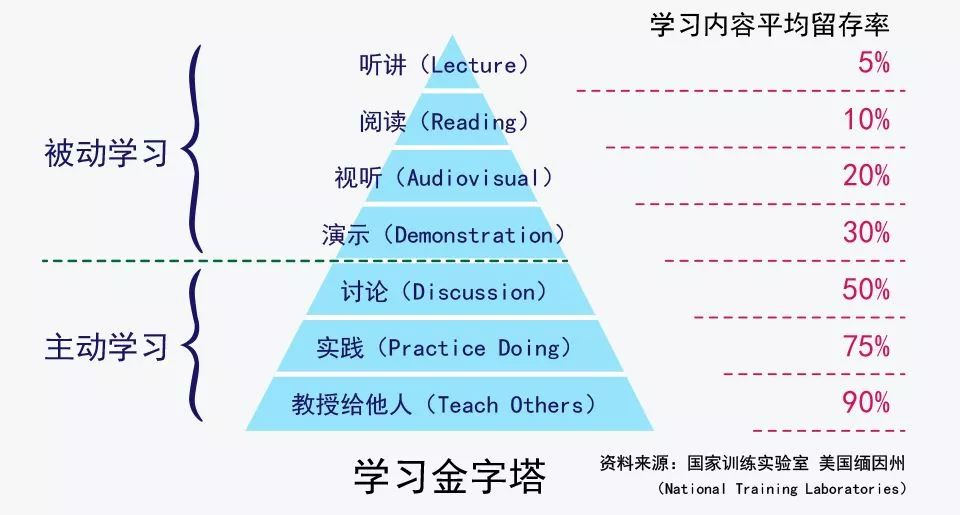

ARTS Note¶
Mark. 20190613 - HyperJ
2019¶
| Month | 01 | 02 | 03 | 04 | 05 |
|---|---|---|---|---|---|
| October | -- | -- | -- | -- | -- |
| September | Week 9-1 | Week 9-2 | Week 9-3 | Week 9-4 | Week 9-5 |
| August | Week 8-1 | Week 8-2 | Week 8-3 | Week 8-4 | -- |
| July | Week 7-1 | Week 7-2 | Week 7-3 | Week 7-4 | -- |
| June | -- | Week 6-2 | Week 6-3 | Week 6-4 | Week 6-5 |
Share¶
- Spark 作业耗时分析
- Spark 作业执行流程（Cluster Mode On YARN）
- Spark Shuffle Service
- Spark 源码调试
- 漫谈数据质量
- Spark SQL 规则
- Flink 作业执行流程（Cluster Mode On YARN）
- Flink 开发实践
- 元数据集成
- 元数据仓库
- 日志采集
- 数据集成
Arts¶
发起ARTS的原因¶
我们整个世界进入了前所未有的信息爆炸时代，人们担忧的不再是无知识可学，而是有学不完的知识。而且时代的节奏变得越来越快，你可能再也不像 20 年前，可以沉着优雅平和地泡上一杯茶，坐在一个远离喧嚣的环境下，认认真真地看本书。
这个时代，你再也不会有大块大块的时间，你的时间都被打成碎片了，不知不觉你也成为了快餐文化的拥趸……在这样一个时代下，快速、简单、轻松的方式给人带来的快感更强烈，而高层次的思考、思辨和逻辑则被这些频度高的快餐信息感所弱化。商家们看到在这样的时代里怎么治愈这些人在学习上的焦虑的商机，他们在想方设法地用一些手段推出各种代读、领读和听读类产品，让人们可以在短时间内体会到轻松获取知识的快感，并产生勤奋好学和成长的幻觉（老实说，像我这种付费专栏或是得到等知识付费产品基本上就是类似的产物）。
这些所谓的“快餐文化”可以让你有短暂的满足感，但是无法让你有更深层次的思考和把知识转换成自己的技能的有效路径，因为那些都是需要大量时间和精力的付出，不符合现代人的生活节奏。人们开始在朋友圈、公众号、得到等这样的地方进行学习，导致他们越学越焦虑，越学越浮燥，越学越不会思考。于是，他们成了“什么都懂，但依然过不好这一生”的状态。
你有没有发现，在知识的领域也有阶层之分，那些长期在底层知识阶层的人，需要等着高层的人来喂养，他们长期陷于各种谣言和不准确的信息环境中，于是就导致错误或幼稚的认知，并习惯于那些不费劲儿的轻度学习方式，从而一点点地丧失了深度学习的独立思考能力，从而再也没有能力打破知识阶层的限制，被困在认知底层翻不了身。
高效学习¶
其中，我还引用了一张学习金字塔

我们可以看到，你听别人讲，或是自己看书，或是让别人演示给你，这些都不能让你真正获得学习能力，因为你是在被别人灌输，在听别人说。
只有你开始自己思考，开始自己总结和归纳，开始找人交流讨论，开始践行，并开始对外输出，你才会掌握到真正的学习能力。
所以，学习不是努力读更多的书，盲目追求阅读的速度和数量，这会让人产生低层次的勤奋和成长的感觉，这只是在使蛮力。要思辨，要践行，要总结和归纳，否则，你只是在机械地重复某件事（记忆知识），而不会有质的成长的。
ARTS的初衷¶
- Algorithm。主要是为了编程训练和学习。每周至少做一个 leetcode 的算法题（先从Easy开始，然后再Medium，最后才Hard）。进行编程训练，如果不训练你看再多的算法书，你依然不会做算法题，看完书后，你需要训练。关于做Leetcode的的优势，你可以看一下我在coolshell上的文章 Leetcode 编程训练。
- Review：主要是为了学习英文，如果你的英文不行，你基本上无缘技术高手。所以，需要你阅读并点评至少一篇英文技术文章，我个人最喜欢去的地方是 Medium.com（需要梯子）以及各个公司的技术blog，如Netflix的。
- Tip：主要是为了总结和归纳你在是常工作中所遇到的知识点。学习至少一个技术技巧。你在工作中遇到的问题，踩过的坑，学习的点滴知识。
- Share：主要是为了建立你的影响力，能够输出价值观。分享一篇有观点和思考的技术文章。
这就是ARTS的全部动机。
为什么要写下来¶
因为写作是一种非常重要的技能，写作不仅仅可以帮你组织你的思路和语言，帮你梳理你的知识，更重要的是写作其实是一种自己对自己的思考，同时还可以很容易地扩散并引入其它人的讨论、指正、批评，这对个人来说是非常重要的。